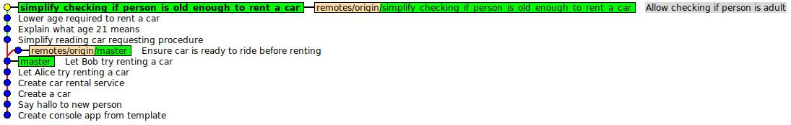
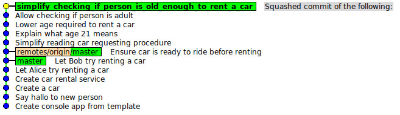

mkdir -p ~/Desktop/cwiczenia
cd ~/Desktop/cwiczenia
git clone https://github.com/git-warsztaty/silverflow-rebase
cd silverflow-rebase
git reset --hard HEAD^
git checkout simplify_checking_if_person_is_old_enough_to_rent_a_car
gitk --all
W Gitk (z flagą --all) sytuacja na start powinna wyglądać jak na screenshocie:

Skończyliśmy pracę na branchu simplify_checking_if_person_is_old_enough_to_rent_a_car i chcemy nałożyć naszą pracę na mastera, amasteramasterale do mastera zdążył dojść w między czasie commit Ensure car is ready to ride before renting.
Nie chcemy, żeby branch master miał rozgałęzioną historię, nie zrobimy więc zwykłego merga.
Niestety zwykły rebase skutkuje potrzebą kilkukrotnego rozwiązywania konfliktów, czego chcemy uniknąć.
Zrebasuj w taki sposób, żeby konflikty rozwiązać tylko raz
W Gitk (bez flagi --all) sytuacja po zakończeniu pracy powinna wyglądać jak na screenshocie:

git merge origin/master --squash
git mergetool
git commit
git rebase origin/master
git checkout --theirs .
git add .
git rebase --continue
gitk